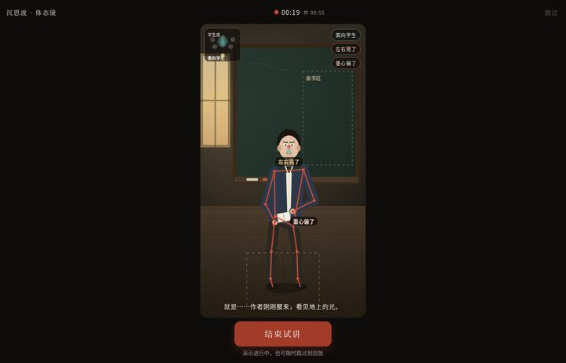

摆好镜头
电脑放在讲台或课桌上，用书本垫稳，让镜头接近眼平齐；手机固定在稳固支架上，横竖屏都先检查人物和双手入画。板书时要能拍到手伸向板书区，避免逆光与遮挡。
给试讲，也给下一次更好的表达
开讲是一面给试讲用的镜子。留下教态、视线与语言线索，回到具体时刻，找到下一次能改的一处。
免费开源 · 无需账号 · 录像默认不保存

先放好设备，再开始观察
电脑放在讲台或课桌上，用书本垫稳，让镜头接近眼平齐；手机固定在稳固支架上，横竖屏都先检查人物和双手入画。板书时要能拍到手伸向板书区，避免逆光与遮挡。
实时练习用摄像头，允许麦克风才能留下转写与水词提示；也可导入已有 MP4 / MOV / WebM，本机只分析画面，不听音轨、不转写、不统计口头禅，导入结果不进历史。
先拖时间线找提示，再读转写和观察记录，看看是否能找到对应的讲述或动作；挑一处重新练。观测只给线索，判断留给讲述者与同伴。
能回到原处，才有据可改
拖动时间线，回到视线落下、晃动或写板后的时刻。对照画面判断：是在看稿、思考，还是忘了回看学生？提示只是线索，原因由你来判断。
有转写时，可以点一句话跳转，并查看口头禅标记；语文试讲还可以对照题干与朗读口令。没有识别到的内容会说明限制，不把缺失当作零。
摄像头练习支持半身或全身；练习模式几分钟，课堂模式可选 10、15 或 20 分钟。导入视频只分析画面，结果不存历史。

给语文试讲和教资面试回看用。只摆事实，不打分：能从转写和时间戳里找到的，列出原话和时刻；镜头和录音看不出的，留一张自查清单自己勾。
二十三条来自师范生备考笔记，全文可以打印：语文试讲观察表。在开讲里，讲完后到回放的「观察记录」查看同一张表。
使用前，先知道边界
Core 保留动作、视线估计和语言等可回看的线索；语文试讲观察表等解释层把线索组织成练习建议，不是客观打分。视线不是精确眼动，情绪不是客观真值；尚未上线的插件市场、OpenAI 接入和团队版不作为可用功能。
导入只分析视频画面，不转写音轨、不统计口头禅；原视频和逐帧分析仅供本次回放，不进入历史，离开页面需重新选择。请保留原文件。
首次使用视觉分析时，浏览器需从本站下载 MediaPipe 模型与 WASM；推理在本机完成，不上传视频。约 90 MB 的本机听写模型默认不自动下载，需在设置里主动下载或开启自动下载，旧设置已开启的选项保留；下载后声音在本机识别。实时练习的历史记录留在当前设备，录像默认不保存。Web Speech 浏览器在线听写可能把声音送到浏览器厂商，不适用本机听写的「声音不上传」说明；体验计划默认关闭，详情见应用的「关于与隐私」。
一台带摄像头的笔记本，用 Chrome 或 Edge 打开即可。放在讲台或第一排课桌上，用书本垫稳，插上电源。不必另买支架或外接摄像头。
默认不会。画面在这台设备的浏览器里处理，录像默认不保存；要留给同伴一起看时，开讲前勾选「把录像存进本机历史」，也只存在这台设备上。浏览器在线听写的声音处理方式不同，见上方「模型和练习数据会去哪里」。
先确认允许了麦克风。Chrome 的在线听写在中国大陆经常连不上，可以在「设置」里下载本机听写（约 90 MB，一次即可），之后不用联网，声音也不出这台设备。Firefox 和微信内置浏览器不支持听写。
能，但必须用 https 地址打开。课堂里更推荐电脑：屏幕大、回放好看，也不用一直举着手机。
目前不能。它能看到手是否伸向板书区、是否在写、写完是否回看学生；写板时会留下板书区静帧，供你自己看字迹。
观看 2D 预设演示与回放：低头看稿、卡顿晃动、转身板书、回看学生。沿用已有 2D 人物；动作、字幕和提示为预设，非真实识别。模拟课堂使用 2D 插画与文字，按本机规则展示举手、回答与提问。
更多摆放和排错细节见课堂摆放指南。
适合教师面试、教资试讲，也适合表达与演讲练习。先讲两分钟，回看一个时刻。